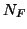
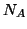

This entry regulates the existence of the noise for the frequency
and the amplitude, and is also used to input the temperature  (needed to calculate the variances for the two noises).
(needed to calculate the variances for the two noises).

,
,
Here is either T (for .true.) or F (.false.), it switches on or off the noise for the frequency, while similarly controls the amplitude noise.